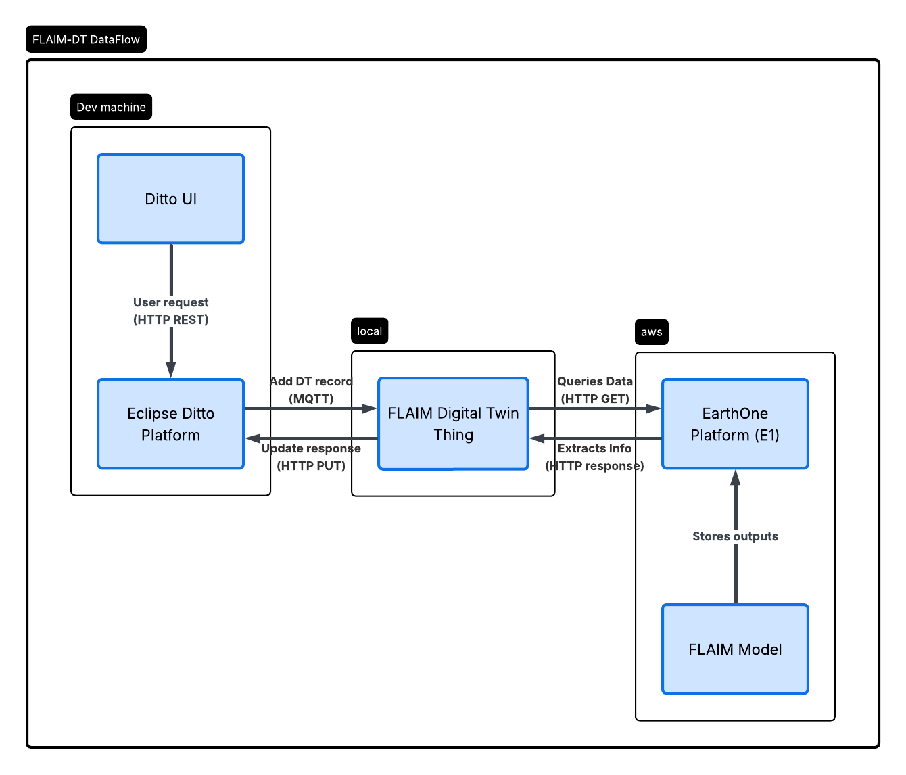

FLAIM Digital Twin
Overview
The Fire Likelihood AI Model (FLAIM) is a geospatial artificial intelligence platform that estimates the probability of wildfire occurrence given an ignition and observed environmental conditions. The model integrates satellite observations, weather, climate, topography, land use, disturbance history, and vegetation characteristics to learn the conditions under which fires occur and spread.
Using deep learning, FLAIM combines Earth observation data with observed fire outcomes to generate spatially explicit estimates of burn likelihood at high spatial resolution. The model is designed to be continuously updated as new satellite observations, environmental data, and fire records become available, enabling it to adapt to changing climatic conditions, land-use patterns, and disturbance regimes. By combining global Earth observation data with modern machine learning, FLAIM provides a scalable framework for quantifying wildfire likelihood and fuel conditions consistently across large geographic areas while remaining responsive to evolving environmental conditions.
By developing digital twin infrastructure around FLAIM, the computation and outputs become accessible by other digital twins in the consortium for further exchange of knowledge and development.
Architecture
FLAIM operates through Earthdaily's EarthOne platform. Data in EarthOne is used as inputs to the FLAIM model to train and generate various outputs related to burn probability, ignition probability, and fuel hazards. With its expansion into the Ditto platform, once a digital twin request is made, the most updated data from the EarthOne platform is retrieved and the output is stored in the digital twin to be accessed by other digital twins in the consortium.

The diagram shows how a digital twin request moves through EarthOne, the FLAIM DT, and Eclipse Ditto. In summary:
- Message requests sent to a Thing (via Ditto UI, HTTP API, or MQTT)
- Payload with a valid message name and required fields (e.g.
location,lat/lon) - Thing ID and feature identifiers registered in Ditto
- Updated Thing attributes, features, and properties (including timestamps)
- Stored digital twin state readable via Ditto UI or HTTP GET
- HTTP API responses when messages are sent or state is queried
- Error responses when requests exceed time limits or use invalid input formats
Inputs
FLAIM uses the following data sources for its inputs:
- Sentinel-1 — C-band synthetic aperture radar (SAR) imagery from the European Space Agency’s Copernicus programme. Provides all-weather, day-and-night observations of surface structure and moisture, supporting fuel moisture and vegetation structure mapping.
- Sentinel-2 — Multispectral optical imagery from the European Space Agency’s Copernicus programme. Used to characterize vegetation cover, land use, fuel loads, and disturbance history at high spatial resolution through visible and near-infrared spectral bands.
- Copernicus — Land monitoring and emergency management products from the European Space Agency’s Copernicus programme, including land cover, vegetation indices, and burned-area information that support fuel and landscape characterization.
- ECMWF — Weather and climate reanalysis data from the European Centre for Medium-Range Weather Forecasts. Provides variables such as temperature, humidity, wind, and precipitation that describe fire weather and environmental conditions at the time of ignition.
- GFWED — Global Fire Weather Database. Supplies fire weather indices derived from meteorological data to characterize conditions that influence ignition and fire spread potential.
Outputs
FLAIM is expected to generate the following outputs:
- Ignition Probability
- Burn Probability
- Fuel Hazards
Use Cases
- Wildfire Risk Assessment
- Fire Behavior Analysis
- Insurance Risk Assessment
Digital Twin Limitations
There are a few limitations to consider when using the FLAIM-DT:
- Permission Required: Access to the current FLAIM-DT requires one to be connected to the EarthDaily VPN and have access to the EarthOne platform.
- Static Data Retrieval: The FLAIM-DT is currently structured as a standard API call to EarthDaily’s EarthOne platform where both the inputs and the outputs are being stored. Therefore, it can only retrieve already published information that is used or outputted from the FLAIM model.
- Limited Data Access: The FLAIM-DT structured to access 1 input (burn data) and 1 output (ignition probability) from EarthOne.
- Region Restrictions: Currently, FLAIM-DT is restricted to the Northwest region of the United States, and therefore any requests for data outside of this area will return an error.
Tool Information
- Version: 1.0 (initial release)
- Type: Closed source
- Source code: authorized access only
- Company: SkyForest, an EarthDaily company
- Contact: Phil Green, Chief Science Officer — phil.green@earthdaily.com